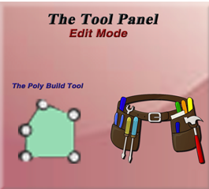

~The Poly Build Tool~
4/7/2025
How to Create Topology with the Poly Build Tool
Creating Triangles Faces from Vertices
Automatic Merging for Vertices

What is the Poly Build Tool?
The poly build tool, takes a bit of practice to get the hang of. But you can create new topology by using this tool; although actually, what it is mostly used for is retopology. This tool does combine a few of the other Edit tool box tools, to enable you to preform different tasks more efficiently.
You can create a quad: If you simply tug on one of the blue edges with your mouse, you will find that the tools turn into this weird type of extrude tool, and you are actually creating new topology and creating, easily a quad.
To Create New Triangular Topology: If you want to create a triangle, this would take an extra step. Because instead of using an edge you are using a vertex, and this vertex needs to be created first. Normally it is created in the center of an existing edge. So, in order to create this vertex, you need to hold down the ctrl key and then pull out with the mouse, as with the quad all you were doing was to just drag out the edge (without the ctrl key) and it created new extruded territory.
To Delete Geometry: You can hold down the shift key, in place of the ctrl key with the left mouse button if you are trying to delete topology. This will either dissolves the vertex or/and delete the face under the mouse cursor. When you hold the shift key, the intended target will be highlighted in red, indicating to you that you are about to delete something.
To Move a Vertex: You can use the left mouse button, click on a vertex, and just drag it, to move it.
Extruding an Edge: You can extrude an edge into a quad, just by dragging it.
How to Create Topology with the Poly Build Tool
With your Cube selected, in Object mode, move into Edit mode.
Now Delete the Cube. We want the viewport to start up empty.
Grab the Poly Build tool from the Tool box
Hit 1 on the Numpad to go into front view. This will ensure that what we draw will be flat.
To Create a Vertex
Hold down the Left mouse button with the ctrl key. Then click on the view port to create a vertex.
Change to the Select tool, and shift-select the two bottom vertices, we need to connect them.
With the two points connected, right click to open the context menu. Select New Edge/Face from Vertices to connect these two points.
Now your points should be connected.
Hit the A key to select all, and then the F key to fill the outline. Congratulations you have just created new topology, starting from an empty view port, with the Poly Build tool.
The Create Quads Checkbox
When you create two triangles with the Poly Build tool, and the middle edges are in close proximity, Blender will automatically merge the two triangles into a Quad, by dissolving the middle two edges. You will see that when we have the Poly Build tool selected, we can turn this behavior off by going to the top, and unchecking the Create Quads checkbox, but for the most part, you will want this behavior to remain. So, keep this box checked.
Techniques for Building Mesh
There are two main methods for building mesh. One is to create quads, which is the most desirable, and the other is to create triangle faces. As I have already stated, when two middle edges of the triangles come close enough together, Blender will dissolve those middle edges that separate the two triangles, and this will create a quad from them. Of course, if you have turned off your Create Quads checkbox, this default behavior of turning triangles into quads, will no longer be available.
Creating Quads from Edges
When you turn on your Poly Build tool, and hover over an edge you will see these blue edges on your object. If you hover over a vertex, the vertex will turn blue.
Now if you are to pull on the blue edge with your mouse, you will see that this edge will behave as if you clicked on the E key. This is because the Poly Build tool, will automatically go into Extrude mode, and create a new edge.

Creating Triangles Faces from Vertices
The second way to create a new face, works a bit differently. That is because a vertex, does not automatically go into an extrude mode. If you pull on one of your vertices, you will find that instead it goes into an automatic move mode. And it acts as if you hit either the G key or the Move tool button.
But that doesn’t mean that you cannot create a new triangle. It just means that you have to press an extra key on the key board to do it. Go to the Center of the Edge, and hit the ctrl-key. This will create a new vertex in the center of the edge.
Pull up on this Vertex, remember with the vertex created the poly build tool will automatically go into move mode and you can move this vertex just by moving the mouse.
Now if you want to try and make a quad from this, we will need to first move the vertex over to the left edge of the box to form half of the quad.
Now go to the center of the right edge of this triangle, and use the ctrl key to create another vertex.
Now pull out this vertex to the right edge of the box. You will see that it will automatically turns these two triangles into a quad while you are pulling this vertex out. It just dissolves these center edges to form this quad. Remember you can turn this automatic quad creation off by deselecting the Check box named Create Quads at the top of the View port. And then you will have two triangles.

Using the X, Y, and Z Axis
As already stated above, you want to start off creating your object in an Orthographic view. This will ensure that your first plane is flat.
But when you start dragging out edges, you will find that your faces may not always remain flat. We can fix this by immediately after we start dragging to extrude, we hit either the Z, X, or Y key to constrain the plane of existence.
Z will constrain it to go straight up or down
X will constrain it to go straight right or left
Y will constrain it to go straight forward or inward toward your computer screen.
Here I used the Poly Build tool in conjunction with the Z Key to go straight up, and I used the Y key on that bottom face to make it appear as if it was going off into the computer screen. So, you can see how you can use this tool in order to actually build objects.
During the drag operation in the top left of the viewport, you will notice it will be giving you the measurements in each of the 3 dimensions, for your mesh. You may find this helpful if you need to be more precise with your models.
Snapping
Snapping in Blender is something that you will find to be quite helpful. With Snapping on, Blender will let you easily align objects and mesh elements to others. By default, it is set to Increment, which creates movement in discrete steps.
When you create a vertex with the poly build tool in Blender, you will be using the ctrl-key to create this vertex. The ctrl key not only creates the vertex, but it will also temporarily send your program into snapping mode. As soon as you come out of creating this vertex, it will turn snapping mode off.
There are a few ways to turn snapping on and off. You can toggle it, by holding down the ctrl key, as explained above, or you can turn it on or off by clicking on the Magnet icon in the menu at the top of Blender’s View port. You can also use the hot keys of shift and tab, to toggle the Snapping Magnet icon on or off. While working with the Poly Build tool, you might find it helpful to set this behavior to snap to Vertex. Then you would see that snapping would cause the vertex to snap to any nearby vertex. You can see by the illustration below that we can have Blender snap to many different things, depending on which option is the most helpful to you at the time.
To Delete a Vertex or Edge
If we hold down the Shift key and move over a vertex, clicking will delete the vertex. Notice the vertex will turn red, warning you that it is in delete mode.

Now if you hover over an edge, or face and hold down the shift key, the entire quad edges will turn red. Notice if you click on it now, the entire face is removed.

Automatic Merging for Vertices
Another cool tip is to turn on Automatic Merging for Vertices. When you have the Poly Build tool selected, you will find a new icon in the top left corner of the viewport. In order to turn on the Automatic Merging for Vertices, you can click on this icon here.
You can also find some of this options for this tool by going to the Property Panel and turning on the Tools Tab. You must be in the Poly Build tool to see these options. Also notice that once you get into this panel that you can also change the Threshold for this tool, making it more or less sensitive to nearby vertices.
Clean Up
When you move one vertex over another with this Merge option, your vertices will merge and the vertex count on your model will be lower. To see this in action, you can switch on your Statistics view and see the Vertex count
Notice below, how I can reduce my vertex count by doing a cleanup of the mesh.
Mesh-Cleanup-Merge by Distance
Retopology
The main thing that this tool is used for is Retopology. Retopology in Blender is a very in depth subject and better held off to its very own tutorial later in this series. But I will explain it briefly here.
What Retopology is, is the method of simplifying a 3D model’s mesh structure, to make it easier to work with. You will find, a lot of times, especially when coming out of sculpt mode that the structure of your object’s mesh is a nightmare. It may be fantastic to look at from the surface view, but the underlying edges, vertices and faces are in total disarray. Blender needs clean topology in order to do things like animation, rendering, or 3D printing, and you will find your self diving deep into this subject of Retopology, to prepare your object before trying to accomplish these very important final steps in Blender.
I know it might seem that I have gone over a few of the concepts several times over, but since this tool is one of the more advanced tools, and tends to have a larger learning curve to it, I wanted to make sure that you came out of this tutorial, feeling much more confident in your own ability to use Poly Build, then before you came in.